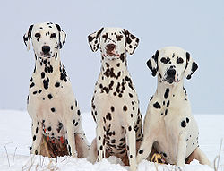
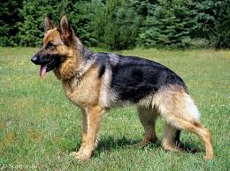

Dalmatiner
Dalmatiner er en stor hunderase som flere mener kan stamme fra provinsen Dalmatia i Kroatia, men en slik opprinnelse er omdiskutert, selv om den aksepteres av FCI. Dalmatiner har kort hvit pels som er besatt med karakteristiske sorte eller mørk brune flekker. I Norge forvaltes rasen av Norsk Dalmatiner Klubb, som også formidler valper fra godkjente kull.
Schäferhund
Schäferhund Bildet er hentet fra papirleksikonet Store norske leksikon, utgitt 2005-2007. Schäferhund av Ukjent/NTB Scanpix ※. Gjengitt med tillatelse Schäferhund er tysklands nasjonale hunderase. Den er opprinnelig en gjeterhund satt sammen av diverse lokale fårehundvarieteter, nå er den tjenestehunden fremfor alle og verdens tallrikeste hunderase. Den ble etablert på slutten av 1800-tallet, og ble første gang utstilt i 1882. Siden 1899 har man forsøkt å avle frem en arbeidsvillig og utholdende tjenestehund, noe som har resultert i en allsidig hundrerase. Den brukes på alle områder hvor hunder kan gjøre nytte: som lavinehunder i skandinavisk høyfjell, drepere av giftslanger i Sør-Amerika, som jakthund med mer.
Golden Retriver
Golden retriever tilhører de britiske retrieverne og er den mest populære retrieveren men i 2017 ble den forbigått av labradoren.